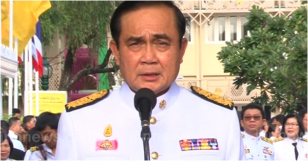

บิ๊กตู่ คาดไม่ถึงอุทยานราชภักดิ์มีทุจริต เชื่อ 2 คนที่หนีไปแล้วโกง

ประยุทธ์ จันทร์โอชา คาดไม่ถึงอุทยานราชภักดิ์มีทุจริต เชื่อ 2 คนที่หนีไปแล้วโกง พร้อมเปิดทางหน่วยงานอื่นตรวจสอบ รับเป็นห่วงอุดมเดช สีตบุตร โดนสังคมกดดัน ยันไม่ปรับ ครม. รอผลสอบออกมาชัดเจน
วันที่ 3 ธันวาคม 2558 พล.อ. ประยุทธ์ จันทร์โอชา นายกรัฐมนตรี และหัวหน้าคณะรักษาความสบบแห่งชาติ (คสช.) กล่าวถึงการตรวจสอบปัญหาการทุจริตโครงการก่อสร้างอุทยานราชภักดิ์ จังหวัดประจวบคีรีขัน
ธ์ ว่า หลังพูดคุยกับผู้ที่เกี่ยวข้องแล้ว หากหน่วยงานรัฐอื่น ๆ ต้องการเข้ามาตรวจสอบก็ยินดี โดยจะให้กระทรวงกลาโหมอำนวยความสะดวก รัฐบาลพร้อมพยายามทำทุกอย่างเพื่อให้สังคมเกิดความเข้าใจอย่างชัดเจน
และไม่ได้กำหนดกรอบเวลา เพราะมีขั้นตอนให้ดำเนินการอยู่แล้ว รวมถึงมีการตั้งคณะกรรมการมาตรวจสอบ ซึ่งหากเร็วไปก็ไม่ได้ ช้าไปก็ไม่ดี จึงต้องยึดหลักการตรงนี้
เริ่มแรกส่วนตัวไม่คิดว่าการจัดสร้างอุทยานจะเกิดการทุจริต แต่เมื่อเกิดแล้ว ต้องดูว่าสาเหตุที่เกิดขึ้นมาจากส่วนใด ทั้งเรื่องรายรับรายจ่าย งบก่อสร้าง การเรียกค่าหัวคิว
ซึ่งต้องให้เวลาตรวจสอบ พร้อมยอมรับว่า มีบางส่วนที่ผิด แต่เป็นการกระทำผิดของคนไม่กี่คน ซึ่งมี 2 คนเท่านั้นที่จะต้องรับผิดชอบ เพราะหากไม่ผิดก็คงไม่หนี
พล.อ. ประยุทธ์ กล่าวต่อว่า ตนยอมรับว่าเป็นห่วง พล.อ. อุดมเดช สีตบุตร รัฐมนตรีช่วยว่าการกระทรวงกลาโหม ในฐานะประธานโครงการอุทยานราชภักดิ์ ที่ได้รับแรงกดดันในเรื่องนี้
เพราะเป็นน้อง แต่ในส่วนของกฎหมาย หากผิดต้องยอมรับ ไม่ผิดต้องหาคนมาลงโทษ และทำงานต่อ
ทั้งนี้ นายกฯ ยืนยันจะไม่มีการปรับคณะรัฐมนตรี (ครม.) ตามกระแส เพราะต้องรอผลการตรวจสอบให้ชัดเจนก่อน โดยขอว่า อย่านำประเด็นนี้ไปสร้างความขัดแย้งในอนาคต
เพราะปัจจุบันก็มีความขัดแย้งมากพออยู่แล้ว และขอประชาชนอย่าตกเป็นเครื่องมือในการสร้างความวุ่นวาย